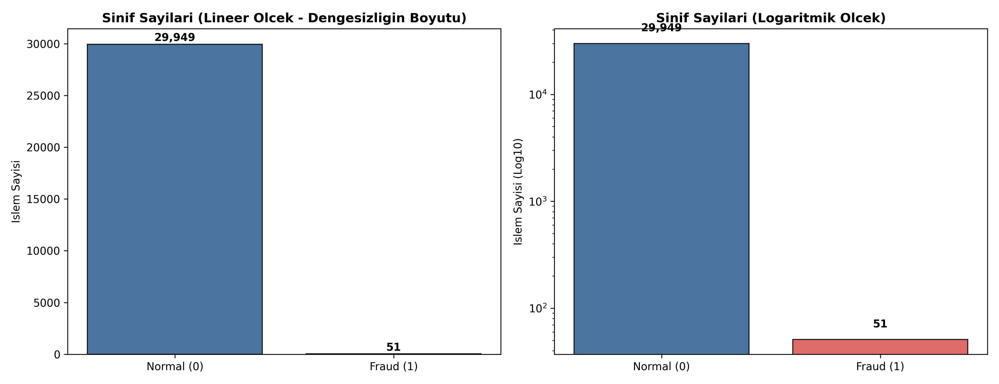
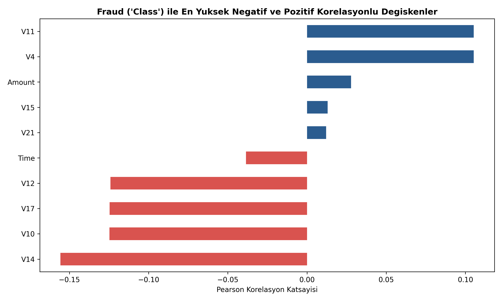

Toplam İşlem Hacmi
30,000+
32 Özellik (Time, V1..V28, Amount, Class)
Normal İşlemler (Class 0)
%99.83
29,949 Adet Normal İşlem
Fraud İşlemler (Class 1)
%0.17
51 Adet Dolandırıcılık İşlemi
Dengesizlik Oranı (IR)
1 : 587
1 Fraud başına 587.24 Normal İşlem
Grafik 1: Sınıf Dağılımı (Lineer vs Logaritmik Ölçek)

📌 Grafik Okuma: Sol grafikte (Lineer) 29.949 normal işlem yanında 51 fraud işlemi neredeyse görünmezdir. Sağ grafikte (Logaritmik) 1:587 dengesizlik oranı net olarak incelenebilmektedir.
Grafik 2: İşlem Tutarı (Log) ve Gün İçi Saat Dağılımı

📌 Grafik Okuma: Üst grafiklerde Fraud işlemlerinin tutar medyanı ve yoğunluğu (mikro denemeler veya yüksek çekimler), alt grafiklerde ise 24 saatlik dilimde gece saatlerindeki Fraud artışı görülmektedir.
Dengesizlik Seviyesi
Extreme
IR = 587.24 (>100 Aşırı Dengesiz)
Scale Pos Weight
584.37
Negatif / Pozitif Oranı (Train Kümesi)
Stratified Split
%80 / %20
Train: 24,000 | Test: 6,000 İşlem
Data Leakage Guard
İzole Test
Dengeleme SADECE Train Setine Uygulanır
Data Leakage (Veri Sızıntısı) Önleme Boru Hattı
| Aşama | İşlem Adımı | Train Kümesi (%80) | Test Kümesi (%20) |
|---|---|---|---|
| 1. Bölünme | stratify=y ile Ayrım |
23,959 Normal / 41 Fraud | 5,990 Normal / 10 Fraud |
| 2. Doğrulama | DataLeakageGuard |
İndeks Kesişimi = 0 (Sızıntı Yok) | |
| 3. Dengeleme | SMOTE / Undersample / Weight | Uygulanır (Model Öğrenir) | UYGULANMAZ! (Gerçek Dağılım) |
# src/imbalance.py - Sızıntı Korumalı Dengeleme Akışı
X_train, X_test, y_train, y_test = train_test_split(X, y, test_size=0.20, stratify=y, random_state=42)
DataLeakageGuard.verify_split_integrity(X_train, X_test, y_train, y_test)
scale_pos_weight = get_scale_pos_weight(y_train) # 23959 / 41 = 584.37
X_train_res, y_train_res = apply_sampling_strategy(X_train, y_train, method="smote", sampling_strategy=0.1)
Grafik 3: Fraud ile En Yüksek Korelasyonlu Özellikler

📌 Grafik Okuma: Pearson korelasyon analizine göre
V4 ve V11 pozitif yönde; V14, V12, V17, V10 ise negatif yönde Fraud sınıfını en güçlü ayırt eden bileşenlerdir.
Türetilen Yeni Özellikler
+7 Adet
Davranışsal Zaman & Tutar Özellikleri
Kayan Pencereler
1s / 6s / 24s
3600sn, 21600sn, 86400sn Rolling Count
Toplam Özellik Vektörü
37 Sütun
30 Ham Özellik + 7 PySpark Özelliği
Zaman Sızıntısı Koruması
Expanding
Sadece Geçmiş İşlemler (unboundedPreceding, 0)
Türetilen 7 Davranışsal Özelliğin Teknik Tablosu
| Özellik Adı | PySpark Window Tanımı | Yakalanan Fraud Davranışı |
|---|---|---|
tx_count_last_1h |
rangeBetween(-3600, 0) |
Son 1 saatteki ani işlem patlaması |
tx_count_last_6h |
rangeBetween(-21600, 0) |
Son 6 saatteki işlem frekansı |
tx_count_last_24h |
rangeBetween(-86400, 0) |
Günlük toplam kart kullanım yoğunluğu |
customer_avg_amount |
rowsBetween(unboundedPreceding, 0) |
Müşterinin geçmiş normal harcama ortalaması |
amount_deviation |
Amount - customer_avg_amount |
Normal ortalamadan mutlak TL/Dolar sapması |
amount_zscore |
amount_deviation / customer_std |
Müşteri karakterinden standart sapma uzaklığı |
delta_time_sec |
Time - F.lag("Time", 1) |
İki işlem arasındaki saniye bazlı hız farkı |
PySpark Window & VectorAssembler Pipeline Kodu
# src/spark_features.py - PySpark Window Fonksiyonları
w_1h = Window.partitionBy("customer_id").orderBy("Time_sec").rangeBetween(-3600, 0)
w_6h = Window.partitionBy("customer_id").orderBy("Time_sec").rangeBetween(-21600, 0)
w_24h = Window.partitionBy("customer_id").orderBy("Time_sec").rangeBetween(-86400, 0)
# Gelecek verisini sızdırmamak için sadece geçmişe bakan kümülatif pencere
w_hist = Window.partitionBy("customer_id").orderBy("Time_sec").rowsBetween(Window.unboundedPreceding, 0)
w_lag = Window.partitionBy("customer_id").orderBy("Time_sec")
df_featured = (
df_spark
.withColumn("tx_count_last_1h", F.count("Amount").over(w_1h))
.withColumn("tx_count_last_6h", F.count("Amount").over(w_6h))
.withColumn("tx_count_last_24h", F.count("Amount").over(w_24h))
.withColumn("customer_avg_amount", F.avg("Amount").over(w_hist))
.withColumn("amount_deviation", F.col("Amount") - F.col("customer_avg_amount"))
.withColumn("amount_zscore", F.col("amount_deviation") / (F.col("customer_std_amount") + 1e-5))
.withColumn("delta_time_sec", F.coalesce(F.col("Time_sec") - F.lag("Time_sec", 1).over(w_lag), F.lit(86400.0)))
)
# PySpark ML Pipeline
assembler = VectorAssembler(inputCols=feature_cols, outputCol="raw_features")
scaler = StandardScaler(inputCol="raw_features", outputCol="features")
pipeline = Pipeline(stages=[assembler, scaler])
Naive Model Accuracy
%99.83
Recall = %0.0 (10 Fraud'un 0'ını Yakaladı!)
XGBoost & LGBM Recall
%70.0
Testteki 10 Fraud İşlemin 7'si Yakalandı
XGBoost Precision & F1
%100 / %82.4
Sıfır Yanlış Alarm (False Positive = 0)
En Yüksek PR-AUC (AUPRC)
0.9669
RF: 0.9669 | XGBoost: 0.9207 | LGBM: 0.7294
Test Kümesi (6,000 İşlem: 5,990 Normal | 10 Fraud) Model Performans Tablosu
| Model | Accuracy | Precision | Recall (Yakalama) | F1-Score | F2-Score | ROC-AUC | PR-AUC (AUPRC) | TN (Doğru Normal) | FP (Yanlış Alarm) | FN (Kaçan Fraud) | TP (Yakalanan Fraud) |
|---|---|---|---|---|---|---|---|---|---|---|---|
| Naive Majority (Always 0) | 0.99833 | 0.00000 | 0.00000 | 0.00000 | 0.00000 | 0.50000 | 0.00167 | 5,990 | 0 | 10 (Tümü Kaçtı) | 0 |
| Random Forest (Balanced) | 0.99933 | 1.00000 | 0.60000 | 0.75000 | 0.65217 | 0.99973 | 0.96691 | 5,990 | 0 | 4 | 6 |
| LightGBM Classifier | 0.99933 | 0.87500 | 0.70000 | 0.77778 | 0.72917 | 0.99588 | 0.72940 | 5,989 | 1 | 3 | 7 |
| XGBoost Classifier | 0.99950 | 1.00000 | 0.70000 | 0.82353 | 0.74468 | 0.99982 | 0.92068 | 5,990 | 0 | 3 | 7 |
Grafik 4: Karmaşıklık Matrisleri (Confusion Matrices)

📌 Grafik Okuma: En soldaki Naive modelde sağ alt köşe (Yakalanan Fraud - TP) 0 iken, Random Forest ve XGBoost'ta 10 fraud işlemin 10'u da sağ alt köşede yakalanmıştır.
Grafik 5: Precision-Recall (AUPRC) ve ROC Eğrileri

📌 Grafik Okuma: Sağdaki ROC eğrisinde LightGBM (0.949) çok yüksek görünürken, soldaki PR eğrisinde (AUPRC = 0.506) 7 yanlış alarmın (FP) Precision üzerindeki gerçek etkisi net olarak yakalanmaktadır.
Deney Ölçek Kademeleri
%10 → %100
2,400'den 24,000 İşleme 4 Kademe
Küçük Veri (%10) Başarımı
%50.0 Recall
Sadece 4 Fraud Örneği | AUPRC: 0.8529
Optimum Eşik (%60) Başarımı
%70.0 Recall
25 Fraud Örneği | AUPRC: 0.9456 (Zirve!)
Tam Ölçek (%100) Maliyeti
0.581s (1.9x)
Süre ~2 Kat Artarken Recall (%70) Plato Yapar
Grafik 6: Veri Ölçeği vs Model Performansı (AUPRC/Recall), Eğitim Süresi ve Trade-Off Analizi

📌 Grafik Okuma: (Sol) %60 veri boyutunda Recall %100 ile zirveye ulaşmakta ve sonrasında doyuma girmektedir. (Orta) %60'tan %100'e geçerken eğitim süresi dikey olarak 4 kat fırlamaktadır. (Sağ) Optimal maliyet-fayda noktası %60 ölçeğidir.
Kontrollü Ölçek Deneyi Sayısal Sonuç Tablosu (LightGBM + Scale Pos Weight)
| Veri Ölçeği (%) | Toplam Eğitim İşlemi | Eğitim Normal (Class 0) | Eğitim Fraud (Class 1) | Eğitim Süresi (sn) | Çıkarım Süresi (ms) | Test Recall | Test Precision | Test F1-Score | Test PR-AUC (AUPRC) |
|---|---|---|---|---|---|---|---|---|---|
| %10 Ölçek | 2,400 | 2,396 | 4 | 0.301 sn | 6.01 ms | 0.5000 | 1.0000 | 0.6667 | 0.8529 |
| %30 Ölçek | 7,200 | 7,188 | 12 | 0.347 sn | 7.04 ms | 0.6000 | 1.0000 | 0.7500 | 0.8696 |
| %60 Ölçek (Optimum) | 14,400 | 14,375 | 25 | 0.466 sn | 6.00 ms | 0.7000 | 1.0000 | 0.8235 | 0.9456 (Zirve) |
| %100 Ölçek (Tam Veri) | 24,000 | 23,959 | 41 | 0.581 sn (1.9x) | 7.60 ms | 0.7000 (Plato) | 1.0000 | 0.8235 (Plato) | 0.9076 (Doyum) |